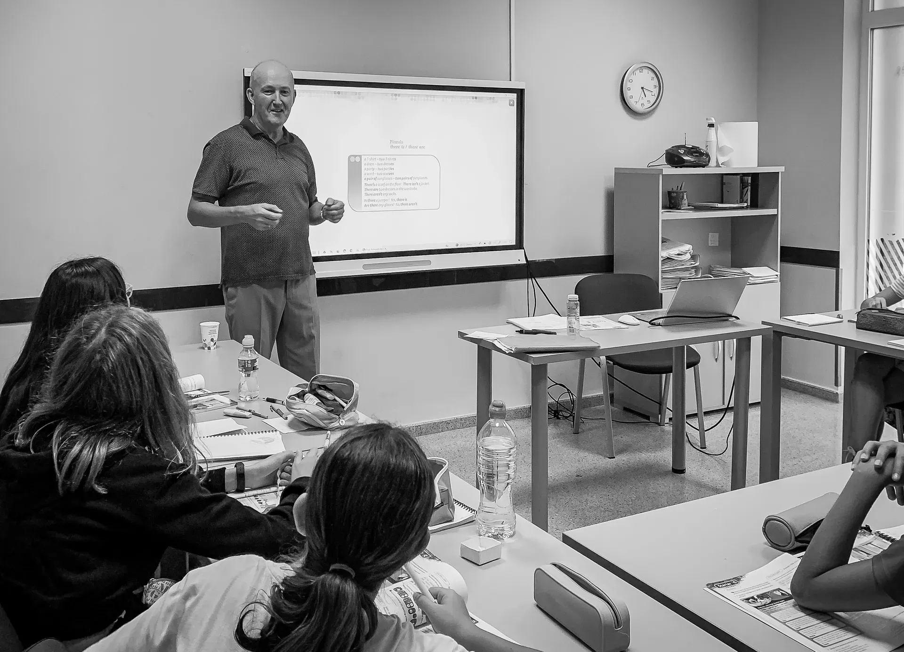

1. EdTech y Educación Global
- Publicación: Global Brands Magazine (Reino Unido / Internacional) — Octubre de 2026
- Artículo: "How Language Learning Became a Billion-Dollar Habit"
- Imagen destacada:

- Descripción: Estudio en blanco y negro de un profesor de idiomas impartiendo clase a sus alumnos ante una pantalla interactiva.